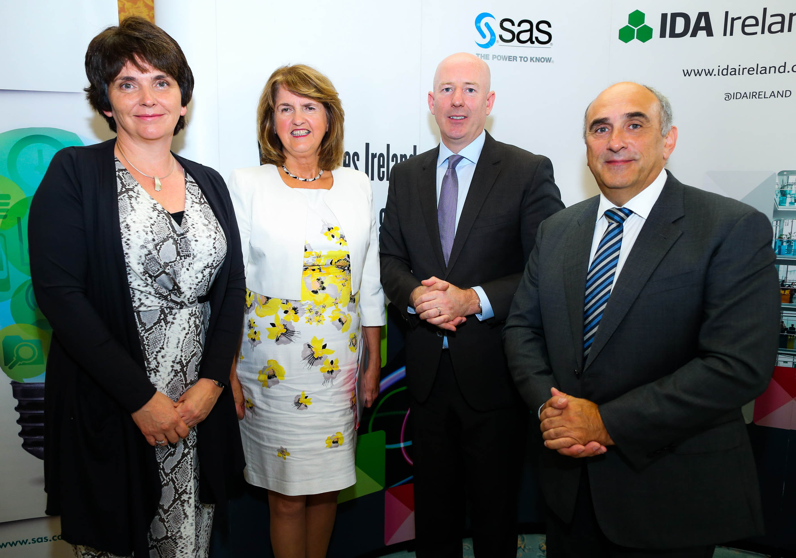

Award-winning UCD spin-out company HeyStaks Technologies has raised €1.5 million as part of a strategic partnership with telecoms operator Digicel, to help bring its mobile Intent Analytics platform to the global market.
HeyStaks' pioneering platform analyses smartphone behaviour in order to enable mobile operators to understand the intent, interests and requirements of users while respecting individuals' right to anonymity.
The company has developed a patented method of enabling mobile providers to better understand what topics interest their customers by creating profiles of phone web usage.
There are many cases in which these usage profiles can assist mobile operators. For example, telecoms companies can use the profiles to enhance the relevance and accuracy of targeted advertising and marketing campaigns, or offer customers special deals or new mobile services that would be of particular interest to them.
The development of HeyStaks Intent Analytics was facilitated by the €1.5m investment led by Digicel, which HeyStaks has been working with since 2013.
Previous investments in the firm totalling €1.8m were made by The Ulster Bank Diageo Venture Fund, managed by Investec Ventures, the AIB Seed Capital Fund, managed by the Dublin Business Innovation Centre (DBIC) and Enterprise Ireland.
The investment will be used to bring the HeyStaks platform to customers in Asia, the Middle East and the Americas.
The creation of new jobs is also planned, with six to ten new hires to be made within six months and up to 20 within a year, in a combination of commercial and technical roles.
Dr Peter Briggs, co-founder of HeyStaks said: "HeyStaks' customer base is growing, so the new investment is important because it enables us to build on our small team with up to 20 new hires in the next 12 months so that we can support and maintain that growth. These new hires will be in the areas of development, sales, support and marketing.
"Respect for and safeguarding of user privacy are central to the HeyStaks platform. Interest and intent profiles that are created by HeyStaks employ pseudo-anonymous identification so that users cannot be directly identified by their profiles."
HeyStaks was founded in 2008 by Professor Barry Smyth, Digital Chair at the School of Computer Science and Informatics, University College Dublin, Dr Maurice Coyle, and Dr Peter Briggs.
The company has won several awards for its technology, including the inaugural Europe-wide, Unica Entrepreneurship Competition for Students and Young Researchers.
Based at NovaUCD, HeyStaks is a University College Dublin (UCD) spin-out company from the Science Foundation Ireland (SFI) funded Clarity Centre for Sensor Web Technologies, now part of the Insight Centre for Data Analytics.

Software developed by Professor Toyotaro Suzumura, a researcher in the UCD School of Computer Science and Informatics, has returned the K supercomputer to the top spot in the Graph 500 global rankings for June 2015.
The purpose of the twice-yearly Graph 500 competition is to determine new benchmarks in order to judge the efficiency of supercomputers in processing complex 'Big Data' workloads that could then be used in graph and network analytics as well as 3D physics simulations.
Real-world applications of this process include areas such as logistics, emergency disaster response, energy distribution, cybersecurity, medical informatics, data enrichment and social networks.
While traditional rankings place an emphasis on physical power, the Graph 500 competition is as much about software as it is the machine itself as it is software which informs the route taken through the data set.
This is the communication dimension of the process and determines the efficiency and productivity of the machine. While the speed of a computer is determined largely by its physical elements — i.e. its CPU and cooling units — the communication ability is provided by the software running on the machine.
In order to calculate ability, the competition requires each computer to perform the same breadth-first search, starting from a single data point and then working outwards through the branches of the overall network.
Using the programme developed by Prof Suzumura and his team, the K computer took first place in the June 2014 rankings only to fall back to second in November of the same year.
Improvements were made in the intervening period that used a novel compression algorithm allowing for the faster exchange of messages between nodes on the K supercomputer which pushed the Kobe-based machine back to number one.
The competition has evidenced the dramatic scale of innovation which has taken place in the field of graph analytics since its launch in 2010.
In November of that year, the winning computer — IBM's Intrepid — clocked a rating of 7 GTEPS. The current iteration of Prof Suzumura's software this year brought the GTEPS score of the K supercomputer up to 38621.4 with second place entering a final result of 23751 GTEPS.
GTEPS refers to the number of billions of edges traversed per second by an individual machine. An edge is the connection between one vertex and another. Each vertex represents a single data point.
Prof Suzumura, a Visiting Professor in the UCD School of Computer Science and Informatics, participated in the competition for the first time in November 2011 with a team comprising himself and Koji Ueno from the Tokyo Institute of Technology. Mr Ueno was then a master's student and is now completing his PhD.
Using the TSUBAME computer they bettered the previous winner of the competition but still finished fourth with a rating just shy of 100 GTEPS.
Since then his team has expanded to include Professor Naoya Maruyama of the RIKEN Advanced Institute for Computational Science, Professor Katsuki Fujisawa of Kyushu University, and Professor Satoshi Matsuoka of Tokyo Institute of Technology.

With the support of the Department of Jobs through IDA Ireland, SAS, the global leader in business analytics, is expanding its operations in Ireland by establishing a new Inside Sales and Customer Contact Centre.
The move will see the company’s workforce increase six-fold and significantly reinforce its presence in the region. The expansion will create 150 jobs over three years, equating to an investment of some €40 million.
The new centre, which will initially be located at NexusUCD, University College Dublin’s industry partnership centre, will support sales of data analytics software into markets across Europe, Middle East and Africa (EMEA).
The new jobs will include multi-lingual business development and sales specialists, customer engagement specialists, data scientists and software engineers. Employees will work with customers to demonstrate how analytics will add value in their business and support them as they deploy and implement these solutions.
Research by the Centre for Economics and Business Research in the United Kingdom has shown that the adoption of big data analytics by businesses could add around €27 billion to the Irish economy alone from 2013 to 2017 and create up to 61,000 net new jobs. Businesses are increasingly aware of how data can help them to make better decisions, whether they relate to operational efficiency, understanding customers, identifying new opportunities or managing risk. Many of these organisations are mid-market companies that have no history of using data and no in-house expertise. The new centre will benefit these companies by making SAS Analytics more accessible to them across a wide range of territories and industry sectors.
“I have discussed investment opportunities with SAS executives at several occasions in recent years and I'm delighted to see this investment decision come to fruition,” An Taoiseach, Enda Kenny TD said. “Through the Action Plan for Jobs, the Government will continue to support the technology sector by investing in the right education & research programmes to ensure Ireland’s ongoing success as a technology hub in Europe."
An Tánaiste Joan Burton TD; Martin Shanahan, CEO, IDA Ireland; John Farrelly, Head, SAS Ireland; An Taoiseach Enda Kenny TD; Richard Bruton TD, Minister for Jobs, Enterprise and Innovation.
“A key element of the work SAS does in the field of big data is about spotting patterns. The economic pattern in Ireland under this Government is one of recovery, of 1,300 jobs being added every week,” An Tánaiste, Joan Burton said. “SAS’s expansion will contribute another 150 positive stories to that pattern, and is another significant statement of confidence in Ireland as an excellent base for global business.”
“As a global company with offices all over the world, we wanted to expand in a city as vibrant as Dublin which has such a thriving technology ecosystem,” said Carl Farrell, executive vice president and chief revenue officer, SAS. “We are now experiencing a ‘democratisation of analytics’, where more and more organisations – including small to medium sized enterprises – are investing in analytical software and services that don’t require a significant up-front investment.”
“Our new centre will provide the extra capacity needed to support customers as they embark on this data analytics journey," Farrell added. “Organisations in the region will now have access to knowledge, advice and powerful analytics to enable them to make more informed decisions and improve their business operations.”
The Minister for Jobs, Enterprise and Innovation, Richard Bruton TD has met senior SAS executives in North Carolina as part of an IDA mission to the USA since taking office.
“A key part of our Action Plan for Jobs has been attracting new software and analytics companies into Ireland through the IDA’s work,” Minister Bruton said. “Crucial also has been developing a cluster of Irish start-ups to build off our success in attracting these companies to Ireland.”
“Of vital importance in all of this has been talent – ensuring, through our education system and our work permit system that these companies, Irish and multinational, can access the skilled workers they need to grow,” he added. “Today’s announcement by SAS, that it is creating 150 jobs in Dublin is a huge boost to this strategy and great news for the city.”
Professor Orla Feely, vice-president for research, innovation and impact, University College Dublin; An Tánaiste, Joan Burton TD; John Farrelly, head of SAS Ireland; Carl Farrell, executive vice president and chief revenue officer, SAS
“University College Dublin has a strong track record of working with business, through a growing portfolio of strategic and mutually beneficial partnerships which can impact the economy and wider society,” said Professor Orla Feely, vice-president for research, innovation and impact, University College Dublin. “With today’s announcement UCD is continuing its evolution as an enterprise campus, with enhanced opportunities for leading businesses such as SAS. By locating its new centre at NexusUCD, SAS can continue to grow its engagement with the University and in particular with the UCD Centre for Business Analytics. Through this engagement SAS can access the rich research and innovation capacity of UCD, along with the largest population of talented students in Ireland.”
“SAS is a highly recognisable brand name in the global software industry and a leading player in data analytics,” said Martin Shanahan, chief executive officer, IDA Ireland. “The development of the Inside Sales and Customer Contact Centre in Dublin is the first of its kind for SAS within EMEA and as such, is an important win for Ireland. SAS’s decision to locate here will further highlight our country as a centre for big data and data analytics - a key emerging sector targeted by IDA Ireland.”
SAS has worked closely with Ireland's inward investment promotion agency, the IDA, a non-commercial, semi-state body promoting Foreign Direct Investment into Ireland through a wide range of services. The IDA has been working with SAS over the last number of years, providing advice in a range of areas to make delivery of the new centre possible. The close collaboration with UCD’s Centre for Business Analytics and NovaUCD also helped accelerate the project and plays an important role in future plans. The new centre follows the investment SAS made last year with the opening of a research and development (R&D) centre in Scotland focused on combatting fraud and financial crimes.
NexusUCD, the Industry Partnership Centre at University College Dublin, offers high-quality modern office space, with flexible occupancy arrangements, and associated services to established innovation-led companies who are collaborating, or wish to collaborate, with UCD’s world-class research base and who wish to locate in close proximity to this research base. www.ucd.ie/nexusucd

A Horizon 2020 grant of €1.2 million has been awarded to Professor Mark O'Malley from the UCD Energy Institute and the the UCD School of Electrical, Electronic and Communications Engineering, for his project Realising Value from Electricity Markets with Local Smart Electric Thermal Storage (RealValue).
The RealValue project will be directed at local small-scale energy storage using Smart Electric Thermal Storage (SETS) and will see real-world implementation and testing in 1,250 homes in Germany, Latvia and Ireland. The project is directed at improving efficiency and value across the European energy market through the use of advanced information and communications technology. SETS technology allows electrical energy to be stored as heat in order to meet the domestic space and water heating needs of households. While SETS will be the subject of the field test, the potential exists for the results to be implemented across a range of domestic electric heating technology.
Using advanced engineering and economic analysis, the RealValue project will seek to improve stakeholders' understanding on the smart coupling of domestic electrical heating systems to electric power system requirements.
RealValue will also validate the model by using desktop techno-economic modelling and virtual demonstration in order to prove the technical and commercial potential of the small-scale energy storage model. The project will also produce findings towards the facilitation of variable renewable wind and solar energy integration. The UCD Energy Institute will work with industry leaders including Glen Dimplex, INTEL, SSE, ESB and EirGrid on the project.
The UCD Energy Institute is a public-private research consortium that examines key technical, social, and economic challenges in the integration of energy systems. It draws on a wide range of expertise from fields including electrical and mechanical engineering, economics and policy, meteorology, and consumer engagement.
Horizon 2020 is the largest research and innovation programme in the EU, and one of the biggest publicly funded in the world, with a goal of ensuring Europe's long-term competitiveness by supporting world-class research.

Samir Belhout almost provided a stunning last-minute come back as UCD fell just short against a Liverpool XI featuring some of the Merseyside club's best young footballers.
While many UCD players will have looked forward to the fixture when it was initially announced, their ongoing adventure in Europe had meant that manager Collie O'Neill was forced to rest a large part of his first team squad in preparation for Thursday's second leg against Slovan Bratislava.
The consequence of that was an opportunity to see the brightest prospects currently being developed by the footballing schools of both UCD and Liverpool FC.
Playing against their academy counterparts from across the Irish Sea, the Belfield side started with a youthful eleven with senior experience dotted amongst the next generation of UCD talent.
The opening ten minutes belonged to Liverpool who passed and moved with the kind of ambition and forward-thinking to which the UCD philosophy aspires.
Despite their high possession percentage, Liverpool failed to create any significant chances in the first half with the College side showing as much as resilience and professionalism as the team has throughout their European journey.
Indeed, the best chance in the opening third fell to a UCD player, when a skilful turn just outside the six-yard box left a Liverpool defender on the ground only for striker Ryan Swan to slip at the vital moment.
In the 26th minute, UCD again gave Liverpool manager, Michael Beale, a moment to see what they were capable of when Eoin Kirwan's curling effort from outside the box forced a diving save from Lawrence Vigouroux.
It was Liverpool who took the lead five minutes later when a cross into the box caused Jerome Sinclair and Adam Harney to collide. The ball fell invitingly to Reds captain, Cameron Brannagan, who had plenty of time to find the bottom corner.
The Students had one final effort before the half — a header that was saved well again by the Liverpool keeper — and the Reds will have entered their dressing room at the break frustrated at their inability to create more clear chances.
Samed Yesil, formerly of Bayer Leverkusen, came on at half time and had an immediate impact, scoring after just three minutes with a first time finish from a right-sided cross. Much of the following thirty minutes was a more cagey affair owing to the rolling substitutions made by both teams but the final ten minutes brought a number of exciting moments for the thousands in attendance.
Liverpool's Madger Gomez hit the post when the ball broke to him inside the box while Samir Belhout had a great opportunity which found itself just wide of the post after a glancing save from the Liverpool goalkeeper.
Belhout was undeterred by the Reds resistance and found the net to make it 2-1 when a ball was flicked on from a set piece.
Only minutes remained for the home side to get an equalising goal and a mistake from a Liverpool defender almost made it happen. UCD picked the ball up from just outside the box as the crowd refocused their attention back towards the Liverpool goal.
Unfortunately for the Students, Liverpool's goalkeeper managed to again save the team from Merseyside and pushed the ball just wide of his goal. That was to be their last chance of the game as the final whistle went seconds later.

Fantastic news about Andy Murray! In case you hadn’t heard, the boy from Dunblane became the first British player to win Wimbledon since 1977, when Virginia Wade took the title. The UK tuned in yesterday to watch a tense, yet exciting, match. Those of you that watched would have seen the crowds “rally” behind Murray with extreme pride over what has been yet another great moment in recent UK sporting history.
The UK is renowned for its sport – rugby, football, cricket, tennis, and the Paralympics all originate here – and we have an impressive record of producing some of the best sports people around. Last year, the UK finished 3rd on the Olympics medal table and the Paralympics medal table with 29 and 34 golds respectively.
We are also home to one of the best, and most diverse, football leagues in the world and don’t forget the famous Oxford and Cambridge Boat Race or equestrian shows such as the Grand National.
At University College Dublin, we have brand new sporting facilities. At the heart of this is a 50m swimming pool, with an extensive relaxation zone and fitness suite. There are also three multi-purpose sports halls, squash and handball/racquetball courts and a climbing wall.
Outdoors, there are 17 natural grass pitches, five floodlit tennis courts, an athletics track, synthetic grass floodlit playing areas and five-a-side pitches.
With over 60 official sports clubs and a wide variety of health and leisure activities, whatever sport you play, you’ll find it at UCD. Our clubs provide a range of opportunities to train, play and compete in sport, no matter what ability or level you have.
Whether your needs are fast or slow paced, there is a sport for you. When you study at the International Study Centre, you will have full access to all sports clubs and facilities at the university.